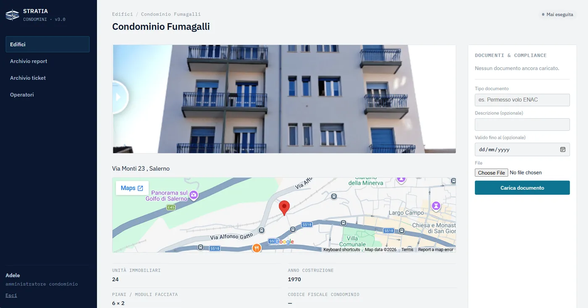
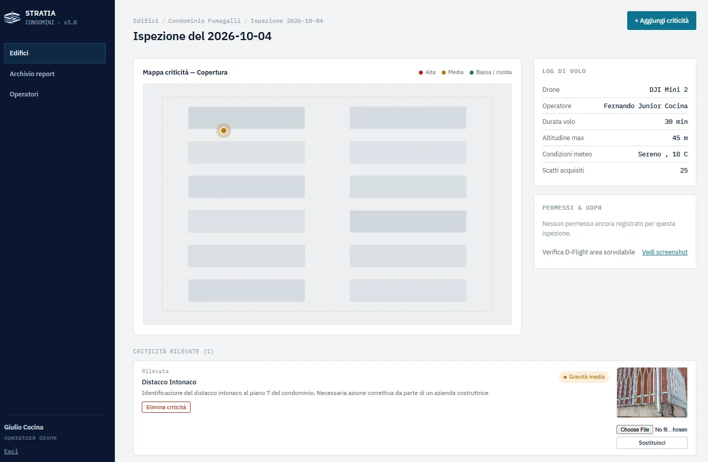
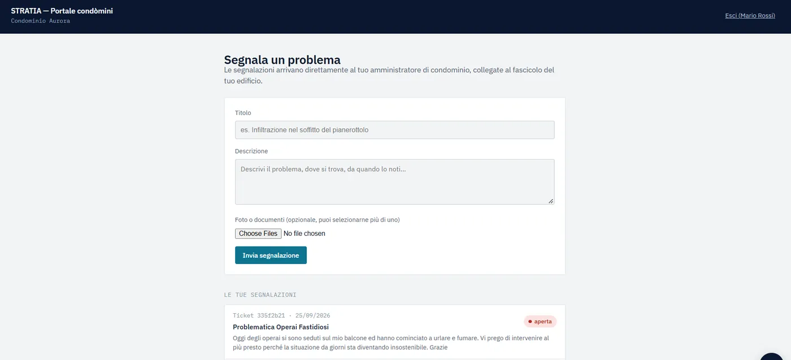

Ticket, report e ispezioni con drone.
Tutto il tuo condominio, in una piattaforma.
Il gestionale tecnico che amministratori e condomini usano insieme: criticità rilevate dal drone, segnalazioni dirette, report per l'assemblea e la relazione tecnica di un ingegnere, archiviata nel fascicolo dell'edificio.
STRATIA Condomini è il gestionale tecnico dell'edificio: criticità, storico, documenti e report di assemblea in un unico spazio digitale, alimentato da ispezioni aeree reali — non da un sopralluogo a vista — e arriva fino alla relazione tecnica firmata da un ingegnere. E per la prima volta il condomino non resta fuori: vede lo stato del suo edificio e può segnalare un problema direttamente, senza passare per il passaparola.
- Amministratori di condominio
- Studi tecnici e professionisti dell'edilizia
- Gestori immobiliari e property manager
- Assemblee condominiali che decidono su base oggettiva
Riesci a rispondere a queste tre domande?
Se la risposta è «dipende» o «devo cercare», non è mancanza di impegno: è che le informazioni sull'edificio restano sparse. Succede in quasi tutti i condomini.
Com'è messo davvero il tetto?
Tetti, grondaie e facciate alte restano fuori portata senza ponteggi, e sono quasi sempre il punto da cui parte l'infiltrazione che si scopre tardi.
Dov'è l'ultima relazione, e quando scade il controllo antincendio?
Foto nelle email, relazioni su chiavette, preventivi in cartelle diverse: quando serve in assemblea si ricostruisce tutto da capo.
Un condomino ha visto una macchia sul soffitto: a chi lo dice?
Senza un canale diretto, il problema arriva tra passaparola e telefonate, e spesso quando è già una voce di spesa.
Due ruoli, una sola piattaforma
Non è solo uno strumento per chi amministra: è lo spazio dove amministratore e condomini vedono gli stessi dati, ciascuno con il proprio ruolo.
Gestione tecnica sotto controllo
- Criticità mappate per edificio, con foto e posizione
- Storico nel tempo: cosa è stato segnalato, quando, e com'è stato risolto
- Fascicolo dell'edificio con documenti, relazioni e scadenze di sicurezza sempre nello stesso spazio
- Nessuna ricostruzione dell'ultimo minuto prima di una riunione
Finalmente parte attiva, non spettatore
- Vede lo stato reale del proprio edificio, non solo quello che gli viene raccontato
- Può segnalare un problema direttamente in piattaforma, senza passaparola
- Arriva in assemblea sapendo come sta davvero il suo edificio
- Partecipa alle decisioni su base oggettiva, non solo per sentito dire
Il fascicolo del condominio, finalmente in ordine
Ogni edificio ha il suo fascicolo digitale: tutto quello che serve sapere e dimostrare, in un posto solo, sempre aggiornato dall'ultima ispezione.
-
Documenti ad alberoVerbali, relazioni, certificati, preventivi: ognuno al suo posto, ritrovabile in un clic.
-
Scadenze di sicurezza in evidenzaAntincendio, ascensore e altri controlli: sai subito cosa richiede attenzione.
-
Relazione tecnica dell'ingegnereArchiviata nel fascicolo, con le versioni: quella nuova non cancella la precedente.
-
Storico delle ispezioniOgni volo con drone resta nel tempo, e puoi confrontarlo con il precedente.
STRATIA archivia e ricorda. Non certifica la conformità dei documenti né il rispetto delle scadenze.
-
Documenti
- Verbale assemblea 2026PDF
- Relazione tecnica · facciateFirmata
- Preventivo rifacimento grondaiePDF
-
Scadenze di sicurezza
- AntincendioScade tra 45 giorni
- AscensoreEseguita il 12/03/2026
-
Ispezioni
- Ispezione di ottobre12 punti rilevati
La piattaforma in azione
Tre schermate reali, una per ogni persona coinvolta: chi amministra, chi ispeziona, chi vive il condominio ogni giorno.



Dal rilievo aereo alla relazione tecnica, in quattro passaggi
Nessuna curva di apprendimento per te: il drone, il controllo del rilievo e l'invio all'ingegnere li gestiamo noi. Tu e i condomini ricevete la piattaforma già pronta all'uso.
Rilievo aereo
Il drone riprende facciate, tetti e coperture da ogni angolazione, inclusi i punti che da terra non si vedono. È il motore dati di tutta la piattaforma.
Nessun ponteggioPiattaforma condivisa
Ogni criticità entra nel gestionale con foto, posizione e stato: amministratore e condomini vedono gli stessi dati, ciascuno con il proprio accesso.
Tutto in un postoRelazione tecnica
Un ingegnere indipendente esamina il rilievo e firma la relazione tecnica, che resta archiviata nel fascicolo dell'edificio insieme al rilievo.
Firmata da un ingegnereAssemblea e segnalazioni
Report e relazione sono già pronti da presentare, e i condomini possono segnalare un problema in qualsiasi momento, non solo quando arriva la convocazione.
Pronto da mostrareRuoli chiari, senza promesse che non possiamo mantenere
Tre cose da sapere prima di iniziare, perché una piattaforma seria dice anche cosa non fa.
Il drone documenta ciò che si vede
Le riprese mostrano lo stato apparente delle parti esterne. Non sostituiscono prove, misure o verifiche strutturali.
L'ingegnere è indipendente
L'operatore del drone e l'ingegnere sono figure distinte. L'ingegnere decide in autonomia se il rilievo basta e risponde della sua relazione. Prima della partenza l'amministratore firma l'accettazione dell'ingegnere incaricato.
STRATIA archivia, non certifica
La piattaforma conserva, ordina e ricorda. Non certifica la sicurezza dell'edificio e non verifica il contenuto né la firma delle relazioni.
Gestione tradizionale vs STRATIA Condomini
| Gestione tradizionale | STRATIA Condomini | |
|---|---|---|
| Accesso a tetti e facciate alte | Limitato, serve ponteggio | Completo, dall'alto |
| Coinvolgimento dei condomini | Solo in assemblea, per sentito dire | Accesso diretto allo stato dell'edificio |
| Segnalazione di un problema | Passaparola o telefonata all'amministratore | Direttamente in piattaforma, tracciata |
| Documentazione | Dispersa, da ricostruire | Centralizzata e tracciata |
| Storico nel tempo | Raro, manuale | Automatico, sempre consultabile |
| Relazione tecnica di un ingegnere | Da commissionare a parte, con tempi variabili | Richiesta dalla piattaforma e archiviata nel fascicolo |
| Pronto per l'assemblea | Da preparare ogni volta | Report già pronto |
Progetto Pilota — Demo gratuita di 6 mesi
Stiamo selezionando un numero limitato di amministratori, studi tecnici e gestori immobiliari per il lancio di STRATIA Condomini: 6 mesi di accesso gratuito, con il supporto diretto del nostro team per configurare la piattaforma sui tuoi edifici e pianificare le prime ispezioni. Il pilota è riservato a cinque studi..
Prima di chiedere la demo
Sostituisce il gestionale contabile che uso già?⌄
Cosa cambia davvero rispetto a un sopralluogo tradizionale?⌄
Cosa succede dopo i 6 mesi gratuiti?⌄
Quanto tempo richiede un'ispezione?⌄
Serve un'autorizzazione particolare per far volare il drone sul condominio?⌄
Chi firma la relazione tecnica?⌄
Cosa trovo nel fascicolo dell'edificio?⌄
E la privacy dei condomini?⌄
Vuoi vedere il tuo edificio così?
Il progetto pilota è riservato a cinque studi tra Salerno e Avellino: 6 mesi di accesso gratuito, supporto diretto del team, nessun costo iniziale.
Richiedi la Demo Gratuita di 6 mesi